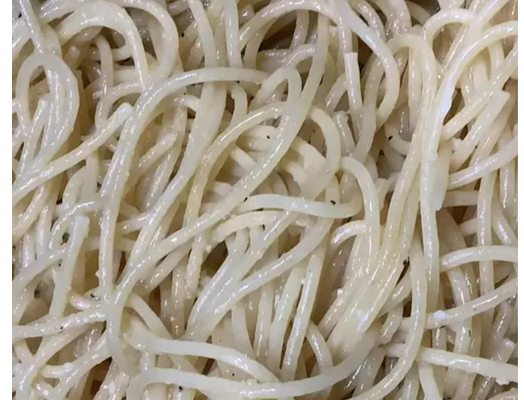

Garlic Buttered Noodles

These buttery noodles are a low effort, yet delicious meal!
Ingredients
- 1 (16 oz) package of fettuccine or spaghetti noodles
- 6 tablespoons of butter
- 1/3 cup grated Parmesan cheese
- salt and ground pepper to taste
Steps
- Fill a large pot with lightly salted water and bring it to a rolling boil
- Stir in noodles, return to a boil, cook pasta between 8 to 10 minutes
- Drain and return pasta to pot. Mix in butter, Parmesan cheese, salt, and pepper